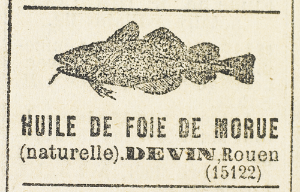

– À la bonne heure, dit Raoul, tu as confiance en moi, et tu sais que je ne trahirai pas, et que la partie est liée entre nous. La victoire de l’un est la victoire de l’autre.
Mais comme on approchait de la rue Auber, une porte-cochère s’ouvrit brusquement sur la gauche, la voiture tourna sans que le train fût ralenti, et pénétra dans une cour.
Trois hommes se présentèrent de chaque côté, Raoul fut happé brutalement et enlevé avant même d’esquisser un geste de résistance.
Il eut juste le temps de distinguer la voix de Joséphine Balsamo qui, restée dans la voiture, commandait.
– Gare Saint-Lazare, et vivement !
Déjà les hommes le précipitaient à l’intérieur d’une maison et le jetaient dans une pièce à moitié obscure dont la porte massive fut barricadée derrière lui.
L’allégresse qui bouillonnait en Raoul était si forte qu’elle ne retomba pas aussitôt. Il continua de rire et de plaisanter, mais avec une rage croissante qui altérait le timbre de sa voix.
– À mon tour !… Bravo Joséphine… Ah ! quel coup de maître ! Voilà qui est envoyé ! En pleine cible !… Et, vrai, je ne m’y attendais pas. Non, mais ce que ça devait t’amuser, mes chants de triomphe « Je suis fait pour la conquête ! pour l’extraordinaire et le fabuleux. » Idiot, va ! Quand on est capable de pareilles boulettes, on ferme la bouche. Quelle dégringolade !
Il se rua sur la porte. À quoi bon ! une porte de prison. Il essaya de grimper vers un petit vasistas qui laissait filtrer une lumière jaunâtre. Mais comment l’atteindre ? D’ailleurs, un léger bruit attira son attention, et, dans la pénombre, il s’aperçut qu’un des murs, à l’angle même du plafond, était percé d’une sorte de meurtrière par où jaillissait le canon d’un fusil braqué en plein sur lui, se déplaçant et s’immobilisant dès que lui-même se déplaçait ou restait immobile.
Toute sa colère se tourna vers le tireur invisible qu’il accabla généreusement d’invectives :
– Canaille ! Misérable ! Descends donc de ton trou pour voir comment je m’appelle. Quel métier tu fais ! Et puis, va dire à ta maîtresse qu’elle ne l’emportera pas en paradis et qu’avant peu…
Il s’arrêta soudain. Tout ce verbiage lui semblait stupide et, passant de la colère à une résignation subite, il s’étendit sur un lit de fer dressé dans une alcôve qui formait aussi cabinet de toilette.
– Après tout, dit-il, tue-moi si ça te plait, mais laisse-moi dormir…
Dormir, Raoul n’y songeait pas. Il s’agissait d’abord d’envisager la situation et d’en tirer les conclusions désagréables qu’elle comportait. Et c’était là chose facile qui se résumait en une phrase : Joséphine Balsamo se substituait à lui pour recueillir les fruits de la victoire qu’il avait préparée.
Mais quels moyens d’action fallait-il qu’elle eût à sa disposition pour avoir réussi en si peu de temps ! Raoul ne doutait pas que Léonard, accompagné d’un autre complice et d’une autre voiture, ne les eût suivis jusque chez Beaumagnan et ne se fût aussitôt concerté avec elle. Sur quoi, Léonard allait tendre le piège de la rue Caumartin, dans un logis spécialement affecté à cet usage, tandis que Joséphine Balsamo attendait.
Que pouvait-il faire, lui, à son âge, et seul, contre de tels ennemis ? D’une part Beaumagnan avec tout un monde de correspondants et d’affidés derrière lui. D’autre part Joséphine Balsamo et toute sa bande si puissamment organisée !
Raoul prit une résolution :
« Que je rentre plus tard dans le bon chemin, comme je l’espère, se dit-il, ou que je m’engage définitivement sur la route des aventures, ce qui est plus probable, je jure que, moi aussi je disposerai des moyens d’action indispensables. Malheur aux solitaires ! Il n’y a que les chefs qui atteignent le but. J’ai dominé Joséphine, et cependant, c’est elle qui, ce soir, mettra la main sur le coffret précieux, tandis que Raoul gémit sur la paille humide. »
Il en était là de ses réflexions lorsqu’il se sentit envahi d’une torpeur inexplicable qui s’accompagnait d’un malaise général. Il lutta contre ce sommeil insolite. Mais, très rapidement, son cerveau s’emplissait de brume. En même temps il avait des nausées et une impression de pesanteur à l’estomac.
Secouant sa faiblesse, il réussit à marcher. Cela dura peu, l’engourdissement croissant, et tout à coup, il se rejeta sur son matelas, étreint par une pensée effroyable : il se souvenait que, dans la voiture, Joséphine Balsamo avait tiré de sa poche une petite bonbonnière en or dont elle se servait habituellement, et, tout en prenant deux ou trois dragées qu’elle avalait aussitôt, lui en avait offert une, d’un geste machinal.
« Ah ! murmura-t-il, tout couvert de sueur, elle m’a empoisonné… les dragées qui restaient contenaient du poison… »
Ce fut une pensée dont il n’eut pas le loisir de vérifier la justesse. Saisi de vertige, il lui semblait tournoyer au-dessus d’un grand trou dans lequel il finit par tomber en sanglotant.
L’idée de la mort envahit Raoul assez profondément pour qu’il ne fût pas très sûr d’être vivant quand il rouvrit les yeux. Il fit péniblement quelques exercices de respiration, se pinça, parla tout haut. Il vivait ! Les bruits lointains de la rue achevèrent de le renseigner.
« Décidément, se dit-il, je ne suis pas mort. Mais quelle haute opinion j’ai de la femme que j’aime ! Pour un pauvre narcotique qu’elle m’a administré, comme c’était son droit, je l’accuse aussitôt d’être une empoisonneuse. »
Il n’aurait pu dire exactement combien de temps il avait dormi. Un jour ? Deux jours ? Davantage ? Sa tête était lourde, sa raison vacillait et une courbature infinie lui liait les membres.
Le long du mur, il avisa un panier de provisions que l’on avait dû descendre par la meurtrière. Aucun fusil ne paraissait là-haut.
Il avait faim et soif. Il mangea et but. Sa lassitude était telle qu’il ne réagissait plus à l’idée des conséquences que ce repas pouvait entraîner. Narcotique ? Poison ? Qu’importait ! Sommeil passager, sommeil éternel, tout lui était indifférent. Il se coucha de nouveau et, de nouveau, s’endormit pour des heures, pour des nuits et des jours…
À la fin, si accablant que fût son sommeil, Raoul d’Andrésy parvint à prendre conscience de certaines sensations, de même qu’on devine le terme d’un tunnel aux bouffées de lumière qui blanchissent les parois ténébreuses. Sensations plutôt agréables. C’était, sans aucun doute, des rêves, rêves de balancement très doux, que rythmait un bruit égal et continu. Il lui arriva de soulever ses paupières, et alors il apercevait le cadre rectangulaire d’un tableau dont la toile peinte bougeait et se déroulait en paysages constamment renouvelés, éclatants ou sombres, inondés de soleil ou flottant dans un crépuscule doré.
Maintenant il n’avait plus qu’à étendre le bras pour saisir les aliments. Il en goûtait peu à peu et davantage la saveur. Un vin parfumé les accompagnait. Il lui semblait, en le buvant, que de l’énergie coulait en lui. Ses yeux s’emplissaient de clarté. Le cadre du tableau devenait le châssis d’une fenêtre ouverte qui laissait voir une succession de collines, de prairies et de clochers de villages.
Il se trouvait dans une autre pièce, toute petite, qu’il reconnut pour l’avoir habitée déjà. À quelle époque ? Il y avait ses vêtements, son linge, et des livres à lui.
Un escalier en échelle s’y dressait. Pourquoi ne monterait-il pas, puisqu’il en avait la force ? Il lui suffisait de vouloir. Il voulut et il monta. Sa tête souleva une trappe et surgit dans l’espace infini. Un fleuve à droite et à gauche. Il chuchota : « Le pont de la Nonchalante… La Seine… La côte des Deux-Amants… »
Il avança de quelques pas.
Josine était là, assise dans un fauteuil d’osier.
Il n’y eut réellement point de transition entre les sentiments de rancune combative et de révolte qu’il éprouvait contre elle, et le sursaut d’amour et de désir qui le secoua des pieds à la tête. Et, même, avait-il jamais ressenti la moindre rancune et la moindre révolte ? Tout se confondit en un immense besoin de la presser dans ses bras.
Ennemie ? Voleuse ? Criminelle, peut-être ? Non. Femme seulement, femme avant tout. Et quelle femme !
Habillée très simplement comme à l’ordinaire, elle portait ce voile impalpable qui tamisait les reflets de ses cheveux et lui donnait une telle ressemblance avec la Vierge de Bernardino Luini. Le cou était nu, d’une teinte chaude et tiède. Ses mains fines s’allongeaient l’une près de l’autre sur ses genoux. Elle contemplait la pente abrupte des Deux-Amants. Et rien ne pouvait paraître plus doux et plus pur que ce visage empreint de l’immobile sourire qui en était l’expression profonde et mystérieuse.
Raoul la touchait presque, au moment où elle l’aperçut. Elle rougit un peu et baissa les paupières, laissant filtrer entre ses longs cils bruns un regard qui n’osait pas se fixer. Jamais adolescente ne montra plus de pudeur et de crainte ingénue, jamais moins d’apprêt et de coquetterie.